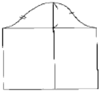
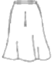
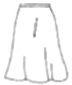
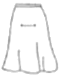
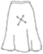

양장기능사 (2006-10-01 기출문제)
1과목: 임의 구분
1. 봉제 시 오그리는 부위가 아닌 것은?
- 소매산
- 소매 팔꿈치 부분
- 어깨 부분
- 밑아래 부분
(정답률: 59%)

2. 퍼커링의 발생 요인과 가장 관계가 적은 것은?
- 옷감의 염색방법
- 재봉틀의 기구적 요인
- 봉사의 종류
- 옷감의 특성
(정답률: 72%)
3. 소매원형의 그림 X부위의 명칭은?

- A.H.L
- S.A.P
- S.C.H
- S.B.L
(정답률: 82%)
4. 앞뒤 어깨선에 타이트한 주름이 생길 경우(어깨가 솟은 경우) 원형의 보정 방법은?
- 어깨선은 내려 보정하고, 진동 밑은 올려준다.
- 어깨선은 올려 보정하고, 그 분량만큼 진통 밑은 내려준다.
- 어깨선은 내려 보정하고, 그 분량만큼 진동 밑은 내려준다.
- 어개선은 올려 보정하고, 그 분량만큼 진동 밑은 올려준다.
(정답률: 71%)
5. 제도 기호 중에서 S.P(Shoulder point)를 바르게 설명한 것은?
- 목둘레선과 어깨 끝점선과 만나는 점
- 자를 겨드랑이에 끼워 뒷겨드랑이 밑에 표시한 점과 어깨 끝점과의 중간 점
- 목을 앞으로 구부렸을 때 제일 큰 뼈의 중심점
- 팔의 가장 굵은 부위에 자를 수평으로 대고 폭을 2등분 한 수직선과 진동 둘레선과의 만나는 점
(정답률: 56%)
6. 다음 중 소매원형의 필요 치수가 아닌 것은?
- 앞뒤 진동 둘레
- 소매길이
- 진동 깊이
- 소매산 길이
(정답률: 77%)
7. 의복구성상 인체를 나누는 기준선은?
- 가슴둘레선, 허리둘레선, 진동둘레선
- 엉덩이둘레선, 가슴둘레선, 허리둘레선
- 목밑둘레선, 진동둘레선, 허리둘레선
- 진동둘레선, 가슴둘레선, 목밑둘레선
(정답률: 66%)
8. 테일러링 재킷의 칼라와 라펠의 심지를 부착시킬 때 사용하는 바느질은?
- 실표뜨기
- 팔자뜨기
- 어슷시침
- 시침질
(정답률: 36%)
9. 단환봉의 설명과 일치하지 않는 것은?
- 봉환이 풀리지 않는다.
- 표면의 땀 모양은 본봉과 같다.
- 윗실 한 올만으로 만들어 진다.
- 신축이 본봉보다 풍부하다.
(정답률: 42%)
10. 다음 중에서 안감으로서 갖추어야 할 기본적인 조건이 아닌 것은?
- 조형면에서 실루엣을 살릴 수 있도록 적당한 강성을 가져야 한다.
- 겉감과 잘 어울리고, 심미적인 면에서 아름다운 색으로 연색되어야 한다.
- 마찰성이 좋고, 염색 견뢰도가 높아야 한다.
- 내구성이 좋고, 젖었을 때 수축성이 커야 한다.
(정답률: 64%)
11. 110cm 폭의 천으로 반소매 원피스를 만들려고 한다. 다음 중 옷감의 필요량 계산법은?
- 옷길이+소매길이+시접(10~15cm)
- (옷길이x2)+시접(12~16cm)
- (옷길이x2)+소매길이+시접(12~16cm)
- (옷길이x1.2)+소매길이+시접(10~15cm)
(정답률: 38%)
12. 다음 중에서 스커트의 원형 제도에 가장 필요가 없는 치수는?
- 허리 둘레
- 엉덩이 둘레
- 엉덩이 길이
- 밑위 길이
(정답률: 84%)
13. 다음 기호 중 안단선의 기호는?
(정답률: 86%)
14. 하반신 반신체의 보정법이 나닌 것은?
- 앞 중심을 파 준다.
- 뒤 중심을 파 준다.
- 앞 중심을 올려 준다.
- 앞 다트 분량을 늘여 준다.
(정답률: 50%)
15. 등길이를 올바르게 재는 계측방법은?
- 목 뒤점부터 허리 둘레선까지의 길이를 잰다.
- 목 옆점부터 허리 둘레선까지의 길이를 잰다.
- 어깨 끝점부터 앞 허리 중심점까지의 길이를 잰다.
- 어깨 끝점부터 뒤 허리 중심점까지의 길이를 잰다.
(정답률: 64%)
16. 다트 머니퓨레이션(Dart Manipulation)이란?
- 다트의 명칭을 나열한 것이다.
- 다트의 기초선을 그리는 것이다.
- 다트를 활용하는 다트를 활용하는 기본 방법이다.
- 다트를 제도하는 것이다.
(정답률: 82%)
17. 마틴(R.Martin)의 인체 측정법 중에서 너비와 두께를 측정하는 용구는?
- 신장계
- 줄자
- 간상계
- 인체각도계
(정답률: 87%)
18. 아우어 글라스 실루엣이란?
- 윤곽이 원통처럼 된 것을 통틀어 하는 말이고 튜블러 실루엣이라고도 불린다.
- 웨이스트 라인은 가늘어 지고 그 윗부분과 아랫부분은 불룩하게 된 실루엣이다.
- 허리를조이지 않는 직선적인 실루엣이다.
- 품이 가느다란 실루엣이고, 칼럼실루엣이라고도 할 수 있다.
(정답률: 77%)
19. 그림의 제도부호가 표시하는 것은?
- 늘임
- 외주름
- 오그림
- 골선
(정답률: 91%)
20. 재단 시 천의 소모량이 많은 것이 흠이지만, 플레어가 가장 바람직하게 나타나는 플레어 스커트의 결 방향은?




(정답률: 82%)
2과목: 임의 구분
21. 인체 각 부위의 치수를 기본으로 하여 제도하는 방식의 재단 방법은?
- 연단
- 평면 재단
- 입체 재단
- 그레이딩
(정답률: 74%)
22. 원가 계산방법 중 제조원가에 해당되지 않는 것은?
- 재료비
- 인건비
- 일반관리비
- 제조경비
(정답률: 89%)
23. 다음 중 실에 대한 설명이 틀린 것은?
- 실의 굵기를 표시하는 방법에는 항중식 번수와 항장식 번수가 있다.
- 영국식 면사 1번수는 실 1파운드의 길이가 한 타래(840야드)일 때를 말한다.
- 면사 번수는 숫자가 클수록 굵은 것이고, 데니어 번수는 숫자가 작을수록 가는 것이다.
- 1데니어는 실 9000m의 무게를 1g수로 표시한 것이다.
(정답률: 74%)
24. 세탁을 자주해야 하는 운동복, 아동복, 와이셔츠 등에 많이 이용되며, 겉으로 바늘땀이 두 줄이 나오기 때문에 스포티한 느낌을 주는 솔기는?
- 통솔
- 평솔
- 쌈솔
- 뉜솔
(정답률: 81%)
25. 다음 중 오감에 주는 시접분의 양으로 가장 적당하지 않은 것은?
- 소매단, 블라우스단 : 3~4cm
- 스커트, 재킷의 단 : 4~5cm
- 목둘레, 칼라 : 6~7cm
- 어깨와 옆선 : 2cm
(정답률: 88%)
26. 칼라와 스탠드분이 분리되어 스포티하면서 단정한 느낌을 누는 칼라는?
- 플랫 칼라
- 타이 칼라
- 리본 칼라
- 셔츠 칼라
(정답률: 74%)
27. 다음 중 길과 소매가 절개선 없이 연결하여 구성되는 소매는?
- 포프(Puff) 소매
- 캡(Cap) 소매
- 래글런(Raglan) 소매
- 플리츠(Pleats) 소매
(정답률: 85%)
28. 심지의 선택에 관한 설명으로 틀린 것은?
- 버팀이 없는 겉감에는 겉감과 동일한 버팀이 없는 심지를 사용한다.
- 신축성이 없는 겉감에는 신축성이 있는 심지를 사용한다.
- 주름 방지성이 있고, 탄성 회복성이 좋은 심지를 사용한다.
- 표면이 균일하고, 평평한 것을 사용한다.
(정답률: 50%)
29. 다음 중 다리미의 지나친 가열로 섬유에 나타나는 변화가 아닌 것은?
- 절단이 된다.
- 변색이 된다.
- 수축이 된다.
- 용융이 된다.
(정답률: 88%)
30. 단 처리에 이용되지 않는 바느질법은?
- 공그르기
- 새발뜨기
- 감치기
- 실표뜨기
(정답률: 91%)
31. 비스코스레이온 실의 길이가 9km 이며 무게가 5g인 실의 굵기(Denier)는?
- 1 Denier
- 5 Denier
- 7 Denier
- 45 Denier
(정답률: 79%)
32. 양털과 비교한 캐시미어 털의 성질 중 틀린 것은?
- 강도가 강하고 방직성이 좋다.
- 부드럽고 가벼우며 고상한 광택이 있다.
- 굵은 권축을 가지고 있다.
- 독특한 스케일이 있다.
(정답률: 63%)
33. 직물의 가공법 중에서 Wash and Wear (W & W)가공의 주된 목적은?
- 직물의 강도를 증가시킨다.
- 직물이 더러움을 덜 타게 한다.
- 합성 직물의 정전기 발생을 막는다.
- 직물에 구김이 덜 가게 한다.
(정답률: 53%)
34. 다음 중 산(acid)에 가장 약한 섬유는?
- 식물성 섬유
- 동물성 섬유
- 재생 섬유
- 합성 섬유
(정답률: 60%)
35. 다음 중 면 섬유와 가장 유사한 성질을 갖는 것은?
- 폴리노직레이온
- 폴리에스테르
- 나일론
- 아크릴
(정답률: 54%)
36. 물세탁에 가장 약한 직물은?
- 면 직물
- 마 직물
- 레이온 직물
- 혼방 직물
(정답률: 70%)
37. 직물의 촉감을 부드럽게 하는 공정은?
- 유포공정
- 축용공정
- 포질고정공정
- 방축가공공정
(정답률: 32%)
38. 다음 중 내일광성이 가장 큰 섬유는?
- 비스코스레이온
- 나일론
- 폴리에스테르
- 아크릴
(정답률: 56%)
39. 다음 중에서 동물성 섬유의 주성분은?
- 셀룰로스
- 지방질
- 펙틴질
- 단백직
(정답률: 67%)
40. 대마섬유에 대한 설명으로 틀린 것은?
- 일명 삼베라고도 하며 안동포가 대표적이다.
- 단면은 다각형이고 측면에는 마디와 선이 있다.
- 폴리에스테르와 혼방하여 와이셔츠에 사용된다.
- 강도가 강하고 내수성이 우수하다.
(정답률: 61%)
3과목: 임의 구분
41. 다음 중 디자인의 요소에 해당되는 것은?
- 비례
- 리듬
- 균형
- 입체
(정답률: 48%)
42. 서로 가까이 놓인 두 색 이상을 동시에 볼 때에 생기는 색채 대비가 동시대비이다. 다음 중 동시대비에 속하지 않는 것은?
- 채도대비
- 색상대비
- 연속대비
- 보색대비
(정답률: 75%)
43. 다음 중 고명도, 고채도, 난색계의 시각적 효과는?
- 후퇴+팽창
- 후퇴+수축
- 진출+팽창
- 진출+수축
(정답률: 71%)
44. 유사와 대비가 해당되는 디자인의 원리는?
- 통일과 변화
- 조화
- 균형
- 리듬
(정답률: 60%)
45. 색광의 3원색에 속하지 않는 것은?
- 노랑(Y)
- 초록(G)
- 파랑(B)
- 빨강(R)
(정답률: 80%)
46. 노랑색, 연두색, 초록색 등의 명도단계에 따라 배색되어진 스커트는 어떤 배색에 의한 것인가?
- 액센트 배색
- 그라데이션 배색
- 세퍼레이션 배색
- 토탈 배색
(정답률: 75%)
47. 한 가지 색상으로 명도를 조절하여 사용하는 배색 방법은?
- 동색 배색
- 보색 배색
- 인접색 배색
- 중간색 배색
(정답률: 78%)
48. 다음 중 가장 연하고 부드러운 느낌을 주는 색으로만 짝지어진 것은?
- 고동색, 회색
- 분홍색, 하늘색
- 주황, 자주
- 연두 파랑
(정답률: 88%)
49. 다음 중 가장 차가운 느낌을 주는 옷감의 색상은?
- 청록
- 보라
- 연두
- 검정
(정답률: 74%)
50. 색입체의 구조에 대한 설명 중 틀린 것은?
- 색상은 원둘레의 척도이며, 무채색을 중심으로 여러 가지 색상이 배치된다.
- 명도는 무채색 축과 일치하게 위로 올라가면서 명도가 높아진다.
- 채도는 중심축에서 수평으로 멀어지는 척도이다.
- 채도는 가운데서 밖으로 나올수록 채도가 낮아진다.
(정답률: 60%)
51. 다음 직물의 종류 중에서 실로부터 제작하지 않고 섬유로부터 화학적 결합을 시키거나 접착시켜 만든 직물은?
- 직물
- 부직포
- 편성물
- 레이스
(정답률: 79%)
52. 직물에 물이 침투할 수 없도록 폴리우레탄수지 등을 직물의 표면에 코팅한 가공으로 실 사이의 기공이 막혀 통기성이 없는 가공은?
- 방추 가공
- 방염 가공
- 방오 가공
- 방수 가공
(정답률: 82%)
53. 염색에 관한 설명 중 옳지 않은 것은?
- 식물성 섬유는 직접염료로 염색이 잘 된다.
- 동물성 섬유는 분산염료로 염색이 잘 된다.
- 나일론 섬유는 산성염료로 염색이 잘 된다.
- 아크릴은 염기성염료로 염색이 잘 된다.
(정답률: 60%)
54. 면 직물의 표백에 주로 사용되는 표백제로만 묶어진 것은?
- 암모니아수, 규산나트륨
- 아황산가스, 사염화탄소
- 탄산수소나트륨, 황산나트륨
- 아염소산나트, 과산화수소
(정답률: 72%)
55. 다음 중 열전도도가 가장 작은 섬유는?
- 면
- 아마
- 양모
- 나일론
(정답률: 53%)
56. 면, 마, 레이온 등의 셀룰로스 직물을 미리 강제 수축시켜 수축을 방지하는 방축가공은?
- 런던슈렁크(london shrunk)
- 염소화법(chlorination)
- 헤르코세트법(hercosett)
- 샌포라이즈(sanforized)
(정답률: 69%)
57. 양말재료 선택 시 위생적 성능을 위주로 한다면 다음 중 어떤 섬유의 소재가 가장 적합한가?
- 면
- 나일론
- 아세테이트
- 레이온
(정답률: 80%)
58. 사문조직(능직)으로 제직된 직물은?
- 서지(serge)
- 도스킨(doeskin)
- 포플린(poplin)
- 태피터(taffeta)
(정답률: 79%)
59. 섬유의 마찰에 의한 대전량의 변화는 주로 섬유의 어떤 성질에 지배 되는가?
- 통기성
- 방추성
- 내열성
- 흡습성
(정답률: 60%)
60. 편성물에 대한 설명 중 옳은 것은?
- 함기량이 적다.
- 구김이 잘 생긴다.
- 신축성이 적다.
- 유연하다.
(정답률: 47%)